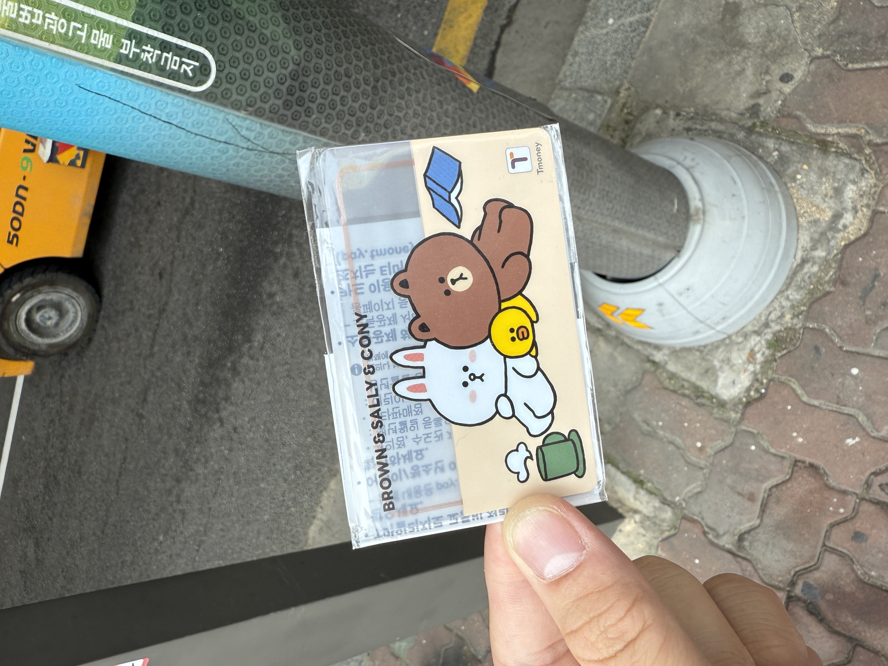
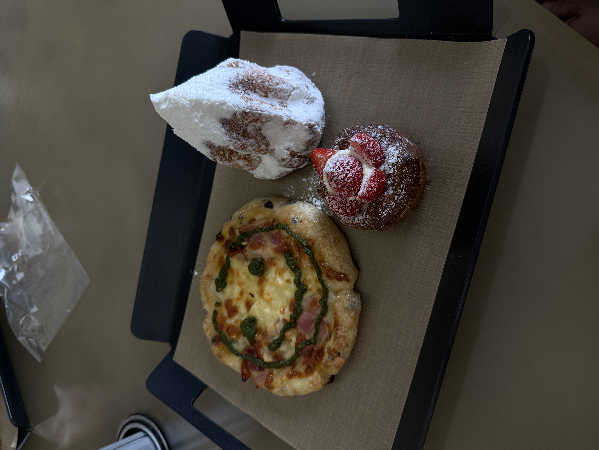
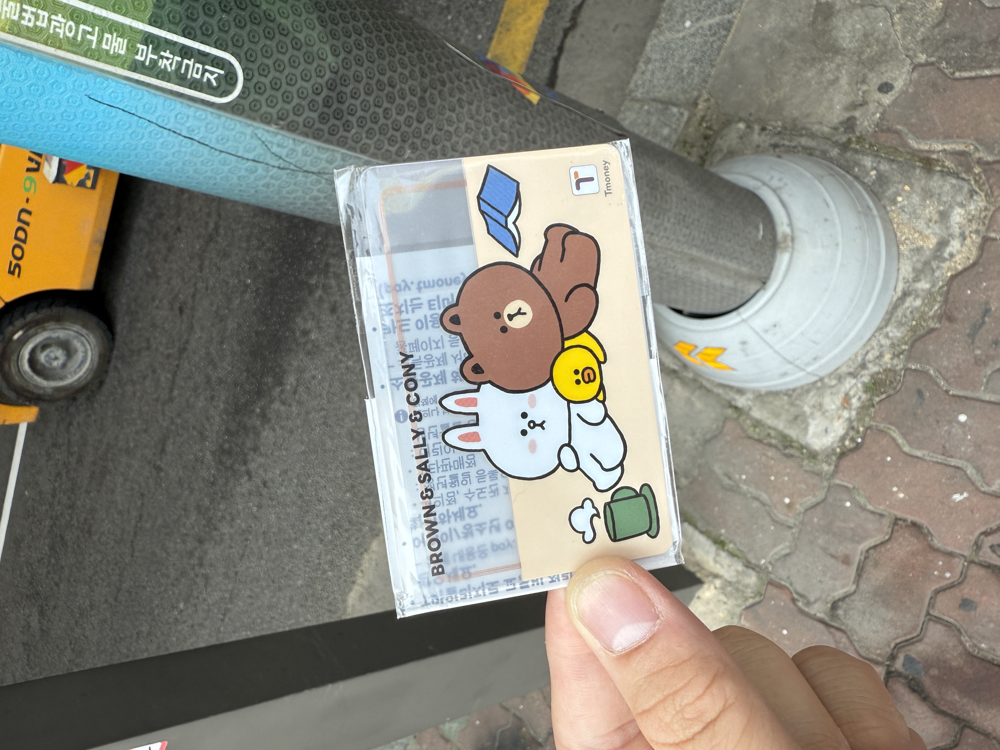
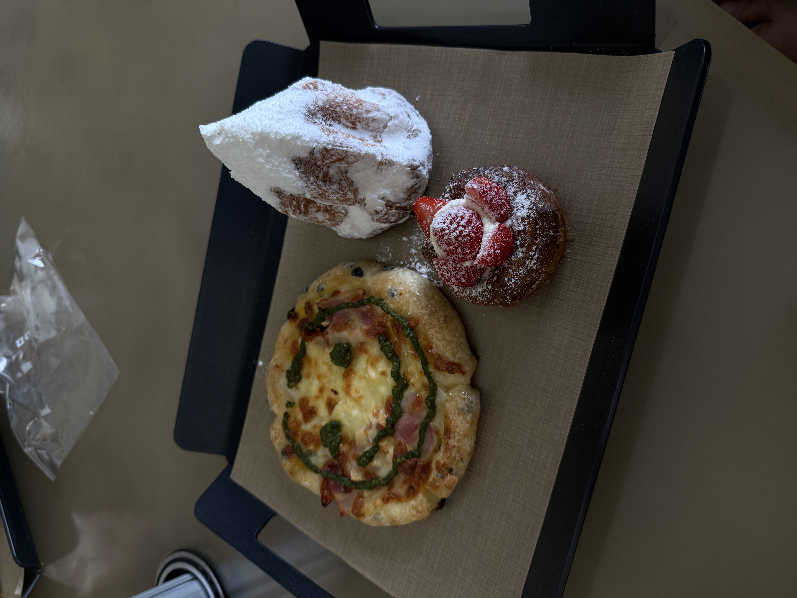
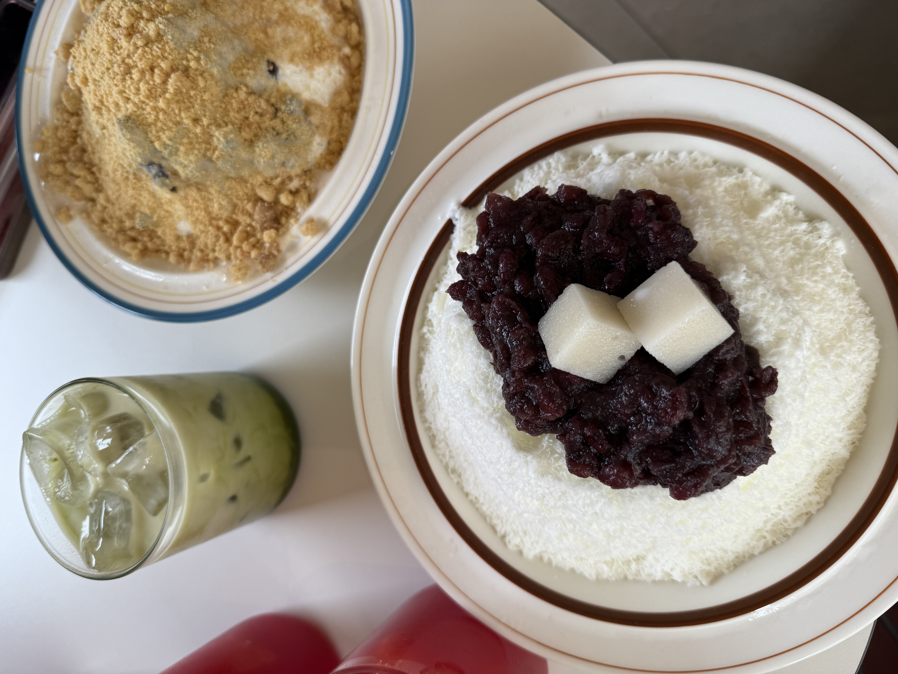
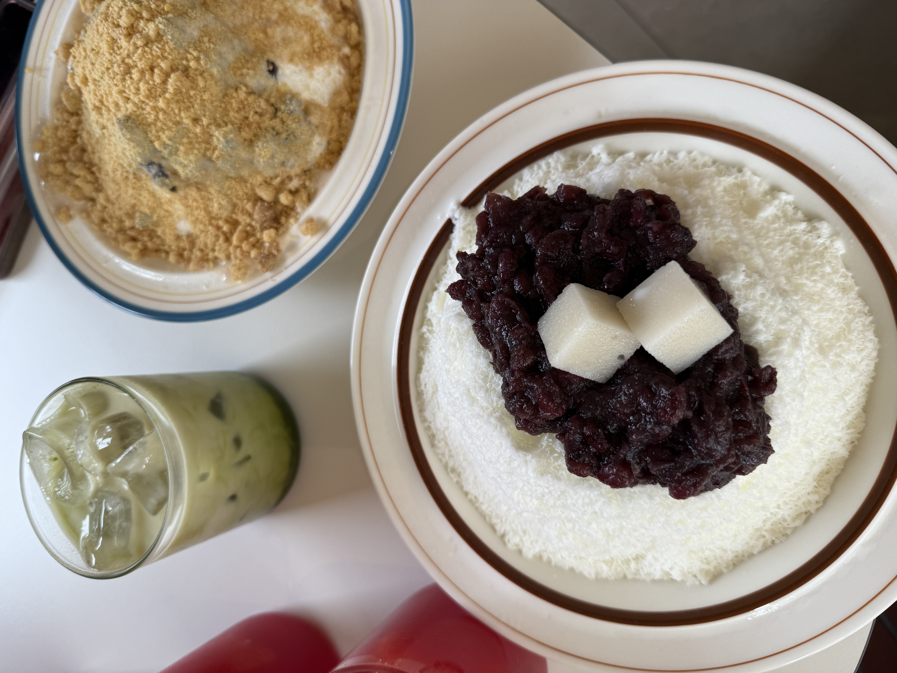

Replay your Seoul, South Korea Trip
Good food, good views, good skincare, it was SO good. I wish i could have bought more snacks. Instead I bought too much skincare.
Meyongdong 명동
This is where I went shopping. I bought a lot of things, including some sunglasses.
Banpo Hangang Park 반포한강공원
I went here at night with some friends I made there. The water show was pretty. We walked under the bridge to get there.
Seongsu-dong 성수동
I went cafe hopping over here. They also had a big skincare store where I bought most of my stuff from. The pastries were delicious!
Dongmyo Flea Market 동묘벼룩시장
I went here to buy some cool secondhand items. Unfortunately, I didn't find anythng to my liking. But my mom did. A lot.
Hongdae 홍대
I went here with a friend to eat some good food. Little did we
know that this was also the
red light districtentertainment district. But the views
were nice too.
 



 
